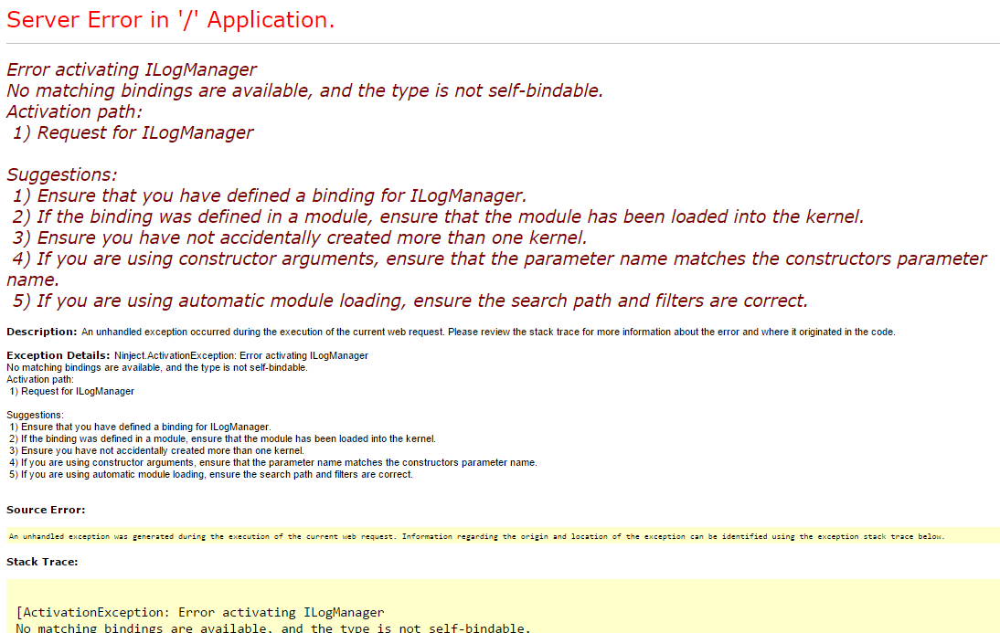

Web diagnostics for Sitecore
This page will explain how install Sitecore.Glimpse.Mvc5 into a Sitecore 8.0 project.
The Sitecore 8.0 release deploys Ninject in the bin\social folder. The Glimpse HTTP module in added to the system.web\httpModules configuration section ahead of the SitecoreHttpModule when the Sitecore.Glimpse.Mvc5 package is installed. After rebuilding the site HTTP requests will raise an unhandled exception associated with the ILogManager.

As a workaround for this exception consider renaming or removing the bin\social\ninject.dll so that it is not picked up as a system assembly. Note this will disable the social functions within Sitecore but will permit Glimpse to run without raising exceptions.